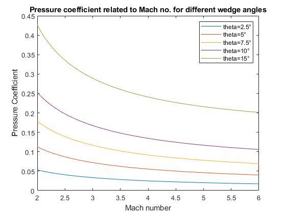
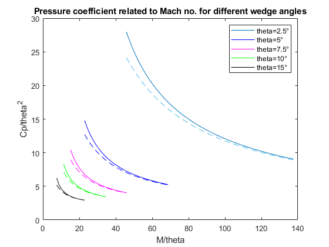

gamma=1.4;
Mach=linspace(2,6,1000);
n=length(Mach);
Cp1=zeros(1,n);
Cp2=zeros(1,n);
Cp3=zeros(1,n);
Cp4=zeros(1,n);
Cp5=zeros(1,n);
K1=zeros(1,n);
K2=zeros(1,n);
K3=zeros(1,n);
K4=zeros(1,n);
K5=zeros(1,n);
x1=zeros(1,n);
x2=zeros(1,n);
x3=zeros(1,n);
x4=zeros(1,n);
x5=zeros(1,n);
dx=zeros(1,n);
beta1=zeros(1,n);
beta2=zeros(1,n);
beta3=zeros(1,n);
beta4=zeros(1,n);
beta5=zeros(1,n);
theta1=2.5*pi/180;
theta2=5*pi/180;
theta3=7.5*pi/180;
theta4=10*pi/180;
theta5=15*pi/180;
for i=1:n
x1=@(x) 2*cot(x)*((Mach(i).^2*sin(x)^2-1)/(Mach(i).^2*(gamma+cos(2*x))+2))-tan(theta1);
dx=@(x) ((4.*Mach(i).^2.*cos(x).^2)/(Mach(i).^2.*(gamma+cos(2*x))+2))+((4.*Mach(i).^2.*sin(2*x).*cot(x).*(Mach(i).^2.*sin(x).^2-1))/(Mach(i).^2.*(gamma+cos(2*x))+2).^2)-((2.*csc(x).^2.*(Mach(i).^2.*sin(x).^2-1))/(Mach(i).^2.*(gamma+cos(2*x))+2));
x2=@(x) 2*cot(x)*((Mach(i).^2*sin(x)^2-1)/(Mach(i).^2*(gamma+cos(2*x))+2))-tan(theta2);
x3=@(x) 2*cot(x)*((Mach(i).^2*sin(x)^2-1)/(Mach(i).^2*(gamma+cos(2*x))+2))-tan(theta3);
x4=@(x) 2*cot(x)*((Mach(i).^2*sin(x)^2-1)/(Mach(i).^2*(gamma+cos(2*x))+2))-tan(theta4);
x5=@(x) 2*cot(x)*((Mach(i).^2*sin(x)^2-1)/(Mach(i).^2*(gamma+cos(2*x))+2))-tan(theta5);
x0=55*pi/180;
toll=10^-5;
beta1(i)=newton_raphson(x1,dx,x0,toll,1000);
beta2(i)=newton_raphson(x2,dx,x0,toll,1000);
beta3(i)=newton_raphson(x3,dx,x0,toll,1000);
beta4(i)=newton_raphson(x4,dx,x0,toll,1000);
beta5(i)=newton_raphson(x5,dx,x0,toll,1000);
Cp1(i)=(4/(gamma+1))*((sin(beta1(i))^2)-(1/(Mach(i)^2)));
Cp2(i)=(4/(gamma+1))*((sin(beta2(i))^2)-(1/(Mach(i)^2)));
Cp3(i)=(4/(gamma+1))*((sin(beta3(i))^2)-(1/(Mach(i)^2)));
Cp4(i)=(4/(gamma+1))*((sin(beta4(i))^2)-(1/(Mach(i)^2)));
Cp5(i)=(4/(gamma+1))*((sin(beta5(i))^2)-(1/(Mach(i)^2)));
end
figure(1)
plot(Mach,Cp1,Mach,Cp2,Mach,Cp3,Mach,Cp4,Mach,Cp5)
xlabel('Mach number')
ylabel('Pressure Coefficient')
title('Pressure coefficient related to Mach no. for different wedge angles')
legend('theta=2.5°','theta=5°','theta=7.5°','theta=10°','theta=15°')
figure(2)
plot(Mach/theta1,Cp1/theta1^2,'-',Mach/theta2,Cp2/theta2^2,'-b',Mach/theta3,Cp3/theta3^2,'-m',Mach/theta4,Cp4/theta4^2,'-g',Mach/theta5,Cp5/theta5^2,'-k')
xlabel('M/theta')
ylabel('Cp/theta^2')
title('Pressure coefficient related to Mach no. for different wedge angles')
legend('theta=2.5°','theta=5°','theta=7.5°','theta=10°','theta=15°')
hold on
for j=1:n
K1(j)=Mach(j)*theta1;
K2(j)=Mach(j)*theta2;
K3(j)=Mach(j)*theta3;
K4(j)=Mach(j)*theta4;
K5(j)=Mach(j)*theta5;
Cp1(j)=2*theta1^2*(((gamma+1)/4)+sqrt(((gamma+1)/4)^2+(1/K1(j)^2)));
Cp2(j)=2*theta2^2*(((gamma+1)/4)+sqrt(((gamma+1)/4)^2+(1/K2(j)^2)));
Cp3(j)=2*theta3^2*(((gamma+1)/4)+sqrt(((gamma+1)/4)^2+(1/K3(j)^2)));
Cp4(j)=2*theta4^2*(((gamma+1)/4)+sqrt(((gamma+1)/4)^2+(1/K4(j)^2)));
Cp5(j)=2*theta5^2*(((gamma+1)/4)+sqrt(((gamma+1)/4)^2+(1/K5(j)^2)));
end
plot(Mach/theta1,Cp1/theta1^2,'--',Mach/theta2,Cp2/theta2^2,'--b',Mach/theta3,Cp3/theta3^2,'--m',Mach/theta4,Cp4/theta4^2,'--g',Mach/theta5,Cp5/theta5^2,'--k')
legend('theta=2.5°','theta=5°','theta=7.5°','theta=10°','theta=15°')
hold on
 